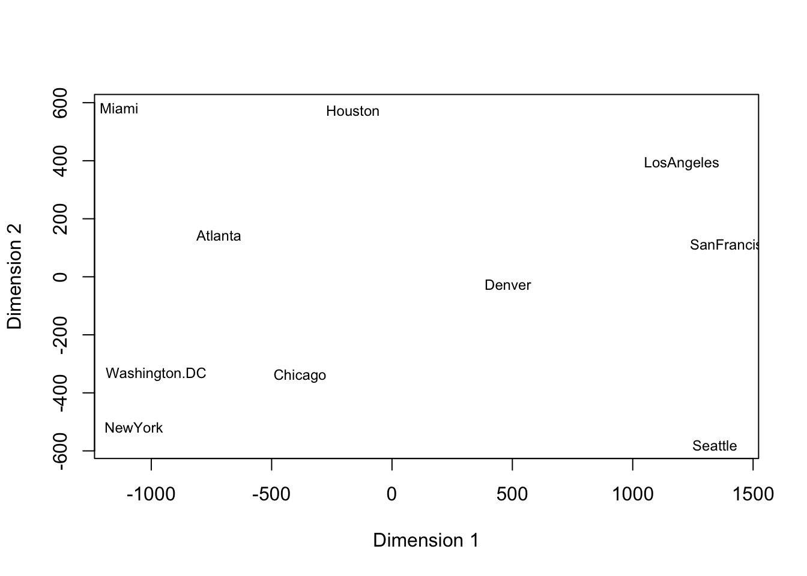

5.1 Kernel PCA
Suppose we have a kernel \(k\) and associated feature map \(\varphi\). In kernel PCA, we want to apply to PCA to the featurized data \(\varphi(\vec{x}_1),\dots,\varphi(\vec{x}_N)\) rather than the original data. The idea is that by studying the featurized data, we can identify additional nonlinear structure in the features that provides a better lower-dimensional representation of the data. We have discussed three approaches to computing PC scores to data: (i) diagonalization of the sample covariance, (ii) applying SVD to the centered data, and (iii) using the duality of PCA and classical scaling.
For the rbf kernel and its infinite dimensional feature map, approaches (i) and (ii) are impossible. Why? The centered data matrix of features \[{\bf H}\tilde{\bf X} = {\bf H}\begin{bmatrix} \varphi(\vec{x}_1)^T \\ \vdots \\ \varphi(\vec{x}_N)^T\end{bmatrix} =\begin{bmatrix} \varphi(\vec{x}_1)^T-\bar{\varphi}^T \\ \vdots \\ \varphi(\vec{x}_N)^T-\bar{\varphi}^T\end{bmatrix} \] has a infinite number of columns so that we cannot compute its SVD. In the above expression, \(\bar{\varphi} = \frac{1}{N} \sum_{i=1}^N \varphi(\vec{x}_i)\) is the mean for the feature vectors. The associated sample covariance matrix \[{\bf \Sigma}_F = \frac{1}{N} \tilde{\bf X}{\bf H}\tilde{\bf X } = \frac{1}{N} \sum_{i=1}^N \left(\varphi(\vec{x}_i) - \bar{\varphi}\right)\left(\varphi(\vec{x}_i) - \bar{\varphi}\right)^T\] will have an infinite number of rows and columns so we cannot hope to diagonalize it either.
Fortunately, the third option, using duality of classical scaling and PC, provides a workaround. Observe that the inner product matrix of the centered feature data \({\bf H}\tilde{\bf X} ({\bf H}\tilde{\bf X})^T\) can be written in terms of the kernel since \[{\bf H}\tilde{\bf X} ({\bf H}\tilde{\bf X})^T = {\bf H} \begin{bmatrix} \varphi(\vec{x}_1)^T \\ \vdots \\ \varphi(\vec{x}_N)^T\end{bmatrix} \begin{bmatrix} \varphi(\vec{x}_1) & \dots & \varphi(\vec{x}_N)\end{bmatrix} {\bf H} = {\bf H K H}\] where \({\bf K}\) has the inner products in the feature space which we can calculate using the kernel function \[{\bf K}_{ij} = \varphi(\vec{x}_i)^T\varphi(\vec{x}_j) = k(\vec{x}_i,\vec{x}_j).\]
Since \(k\) is a symmetric kernel, it follows that \({\bf K}\) is positive semidefinite. Using this property, one can argue that \({\bf HKH}\) will also be positive semidefinite. We can use the eigendecomposition of the doubly centered kernel to compute the kernel principal component scores. Specifically, if \({\bf HKH}\) rank \(r\) with eigenvalues \(\lambda_1\ge \dots \ge \lambda_r >0\) and corresponding eigenvalues \(\vec{u}_1,\dots,\vec{u}_r \in \mathbb{R}^N\), then \({\bf HKH}\) factorizes as \[{\bf HKH} = \underbrace{\begin{bmatrix}\vec{u}_1 & \dots &\vec{u}_r\end{bmatrix} \begin{bmatrix} \lambda_1^{1/2} &0 &0 \\ 0& \ddots & 0 \\ 0 &0 & \lambda_r^{1/2} \end{bmatrix}}_{{\bf U\Lambda}^{1/2}} \left({\bf U\Lambda}^{1/2}\right)^T. \]
The rows of the matrix \({\bf U\Lambda}^{1/2}\) are almost the kernel PC scores. The only issue is an additional the identity \[{\bf HKH} = ({\bf H}\tilde{\bf X})({\bf H}\tilde{\bf X})^T\] is missing the factor of \(1/N\) appearing in the covariance calculation. Accounting for this, the first \(r\) non-zero kernel PC scores are the rows of the matrix \[\frac{1}{\sqrt{N}} {\bf U\Lambda}^{1/2}\] and the corresponding nonzero PC variances are \(\lambda_1/N,\dots,\lambda_r/N.\)
Notably, at no point do we compute the PC loadings! However, similar to standard PCA, we use the scores for dimension reduction and the PC variances for choosing a dimension. Without the loadings, we cannot recompute the original data. Below, we show an application of kernel PCA to the helix and demonstrate its ability to identify the one-dimensional structure of the helix and its sensitivity to kernel selection and tuning.
Example 5.1 (Kernel PCA applied to the Helix) First, we show the kPCA variances for three different kernels and tuning parameters. The data are regularly spaced points along the helix.

From these graphs, one would infer very different lower dimensional choices depending on the kernel and parameters. The polynomial kernel provides the most robust estimate of the one-dimensional nature of the data.
Figure 5.1: kPCA Variances for different Kernels
Below, we show the recovered one-dimensional coordinates for the polynomial kernel with offset 1 and degree 4 shown below, which is good, but do not quite reflect the equal spaced nature of the points.

As the preceding example demonstrates, kernel PCA can identify nonlinear structure, but is quite sensitive to kernel selection and tuning. More advanced implementations make use of cross-validation to aid in the selection and tuning of the kernel [17].